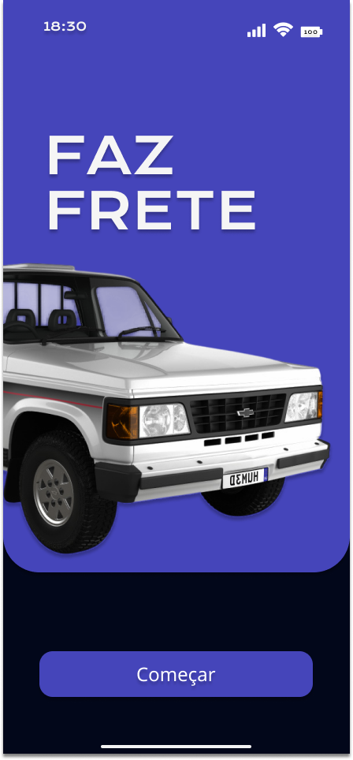

Funcionalidades Desejadas do Projeto
App de Fretagem
Plataforma para organizar o transporte coletivo e a fretagem de carros e mercadorias em Pedro II.
Gestão de Perfis
Sistema de cadastro e login para Clientes, Motoristas e Administradores, com perfis detalhados e autenticação via Google/Facebook.
Solicitação e Rastreio
Permite ao cliente solicitar fretes informando origem/destino e acompanhar a viagem em tempo real no mapa.
Chat e Pagamentos
Chat em tempo real entre cliente e motorista e um sistema integrado para gerenciamento de pagamentos, incluindo Pix.
Tecnologias A Ser Aplicadas
React Native
Node.js (Express)
PostgreSQL
Firebase (Auth/DB)
Google Maps API
Documentos do projeto
O que Aprendi
- Analisar um problema de logística local (a dificuldade de fretagem em Pedro II) e definir escopo, justificativa e público-alvo de uma solução de software.
- Identificar os Atores do sistema (Cliente, Motorista, Admin) e especificarrequisitos funcionais detalhados através de Casos de Uso.
- Documentar os fluxos de eventos de cada funcionalidade, especificando o Fluxo Básico, Fluxos Alternativos e Fluxos de Exceção.
- Modelar a arquitetura e os processos do sistema utilizando Diagramas de Caso de Uso, Diagramas de Classe e Diagramas de Atividade/Sequência.
- Pesquisar, comparar e selecionar a arquitetura de tecnologias (stack) mais adequada para os requisitos do projeto, incluindo React Native, Node.js e Firebase.
- Projetar e criar protótipos de alta fidelidade (mockups) para a interface do usuário (UI),definindo a experiência de navegação do aplicativo.